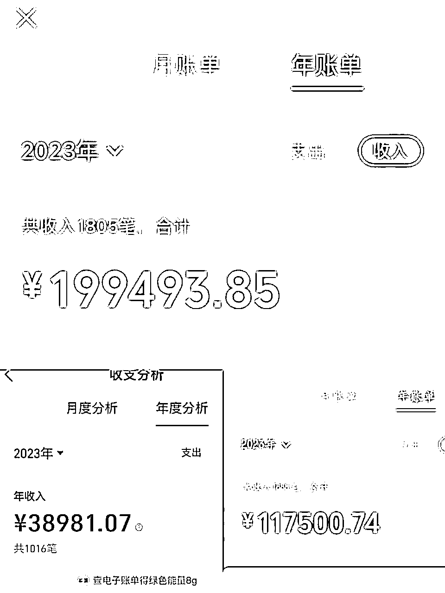

来源：https://k874t2qh8w.feishu.cn/docx/RR7edKT1Ao8Zqax6BfBcON1FnYe
大家晚上好，先给大家做一个简单的自我介绍，我叫辰风，定居长沙，主业电商，副业自媒体。
我永远记得在我三年多前开始尝试做公众号的时候，当我第一次做了自己的付费课程，9.9。
我被一个黑粉劈头盖脸骂了一顿，他疯狂骚扰我的社群，还写了一篇文章说我割韭菜。
（22年数据截图，已售，注册了同名新账号，快万粉）
三年后，那个黑粉还在。但是我已经用6万粉的公众号和我的变现，说明了一切。

（这几天算了一下账，刨掉了来回倒手的收入）
很多人会说，你都已经通过自媒体赚这么多钱了，为什么还要去职场呢？
不知道因为是男生的原因，还是因为对职场的这种天然的追求，就是想去职场去探索，想自己带一个团队。
主要的是在职场你没有后顾之忧。
我大学毕业就开始找工作了，第一份工作是办信用卡。
那时候每天要走两三万步，从早上7:00多上班，晚上8:00多下班，中午休息半个小时，那大概是我觉得人生最痛苦的时候。
那时候我的公众号还处在一个瓶颈期，赚点代运营的费用，一个月也就800块钱。
我是到了现在这家公司，才把公众号正儿八经做了起来。
可以说后面这家公司见证了我的自媒体从1-5。
长沙的薪资很低，我一开始也只是抱着试一试的心态，那时候的工资大概是3K左右，经历了一个月之后的实习期，薪资调整到了4.5K。
刨掉五险，就是3.9K。
这工资还是不满意的，于是在这个期间我就不断地做公众号，也就是前文所提到的，我慢慢地把自己的帐号做到了6w粉，然后出售。
现在还留了一个帐号2w粉，就是辰风日记。
刚开始踏入职场的时候，很多东西都不会。
经常被领导约去谈话，谈过三次。
第一次是跟我说，老是出错，出现各种各样的问题。
第二次是劝退，说不适合现阶段这份工作。
第三次是我做副业。在职场做副业是一个很大的忌讳，而且我的副业已经严重影响了我的正常上班。
后来我觉得在自媒体上看到一定起色之后，我开始想尝试做自由职业，于是我提了离职，就这样晃荡了两三个月之后，我又重新回来。
自己做创业，需要投资，需要成本，所有的业务后果都是自己去承担，有太大的压力。
但是公司会有人为你托底，你只需要把你的业务做好就行。
我很喜欢我公司的环境，氛围很好，也不加班，不内卷。
重要的是，我可以和老板说话，可以看到我的未来。
在职场的环境下，去探索副业，我的心态会更稳，也会更扎实。
更能够看清楚自己到底想要的是什么。
自媒体这件事情，本身就应该慢慢来，你心急反而拿不到更好的结果。
如下是正文：
持续做好一件事，然后静待花开。
19年到22年，这个时间段一直在写文章，但是没有太大的改变，除了日复一日的写作。
大家都在说，公众号大势已去，很多人退场，说公众号已经不赚钱了。
但是我不甘心，因为这在当时，是我唯一的技能。
如果我人生当中唯一有成就感的事情，就是自媒体，就是公众号。
后来进了公众号圈子，认识很多人，学到公众号引流玩法。
我加入了一个社群，我们小圈子做公众号引流，然后我们摸索了一套自己的经验方法论。
在总结了自己的这套经验方法论之后，我就开始拓团队，大规模做投放，那段时间公众号一天的涨粉在几百到上千不等，基本上每天都有新的爆破。
虽然认知没跟得上，错失了很多收益，但是那是我第一次从公众号看到大把的未来。
模式很简单，就是不断地用那一套方法论去引流，然后再助理引流，给助理结算广告费，然后我去谈广告、谈合作，然后公众号持续写内容、发文。
后来从第一个月赚200，第二个月赚700，再到1000，3000。
通过公众号，我可能已经赚了10多万的收入，市场行情好的时候，可以实现月入过万，刨掉广告成本费，变现在7、8k左右。
有句话说，抓住风口，猪也能飞上天。
在22年的时候，公众号迎来了一段红利期，我当时也很巧妙的抓住了这个风口，那时候就做公域的投流，我们以投稿赚稿费，这个作为一个切入口，然后做广告的宣传，在抖音，小红书这些平台去进行广告投放。
关于这个内容，之前星球也有写，可以搜索”公众号站内外引流涨粉全流程“就可以看到。
部分数据，之前的懒得放了：
也是通过投流，我赚了自媒体的第一笔大钱吧，当时一个月的话可以变现个1万到2万左右，有时候一次的涨粉可能会有几千到上万不等，少的话可能也会有几百的日增。
后来为什么公众号没做了呢？
不能一条道走到黑，及时探索新的路。
因为公众号的大环境开始发生了转变，我们原有投流的玩法也行不太通了，投产比很差，再加上公众号的阅读量跌得很严重。
这时候我才意识到，我可能需要去打造自己的个人私域，做自己的个人产品
自媒体的变现突破，是从第一次做大规模的付费课程开始，也就是我的助理班2022年12月份正式启动。
当提出这个想法之后，我和泡泡达成合作，我们做到了第四期，学员规模最大的时候有50名。
客单价两百多，但那是我第一次真正意义上的月入过万。
但是很快，我意识到一个问题，助理课有点卖不动了。
一个是流量出现了卡点和瓶颈期，没有新的用户转化。
一个是后端的变现，有很多公众号博主不再需要助理资源。
我们需要找大量的渠道来进行对接，后端和前端都出现了卡点。
这时候我意识到，不能够光靠公众号吃饭了，在当时公众号的引流已经受到平台的桎梏，我们的那一套方法论也不再可行。
于是我开始做转型了，做个人IP。
我做了自己的第一个付费社群，忍痛放弃了500人的免费群，然后从9.9把它做到了99。
现在这个社群已经有了1000人的规模，算得上是一个量级比较大的付费社群。
（23年7月，正式月入两万）
刚开始我做合伙人的时候，市面上做的人还不算太多，我从1999开始做发售，就这样收了大概有10来位朋友。
之后不断地提价，最后涨到4999，现在有了30多位合伙人。
春节期间我做了两场直播发售，推我的合伙人，预估收入大概在30,000左右。
私域是流量的放大器。
我发现23年整个通过私域变现的趋势会比前几年都要好很多，可能是因为个人的能力在不断的提升，也可能是自己的认知拔高了。
23年一年我赚了过去20多年都没赚到的钱，实现了月入过万。
我通过私域变现的第一桶金，是当时帮一个朋友分销他的年度社群，那时候卖了3个出去，也就是赚了300来块钱。
我从来没有想过我可以通过我的朋友圈能够推荐出去，我当时只是做了这样的尝试。
有了这样的正反馈之后，然后我就开始不断的去发朋友圈，去做社群的运营等等，这些私域方面的尝试，然后也取得了一定的成绩。
正反馈很重要，赚钱很重要。
比如之前做快闪社群，然后单次变现了2000左右；还有当时有一次推荐一个199的星球，也卖了14个左右，变现了近2800的gmv
我的私域变现是通过社群开端的，通过朋友圈不断的进行用户转化和成交，最后通过私教合伙人得到放大和扩大收益的。
陪伴社群算是我的流量基本盘吧，然后也通过这样的一个基本盘，转化了一些高客单的课程产品和私教合伙人的产品，这个大概就是我23年整个发展的一个路径。
私域是做知识付费必须走的一条路，可以说私域是我们知识付费的终点。
不管是做公域也好，还是做私域的获客，我们都需要有自己的付费产品去承接。
这就需要你去树立自己的个人IP，打造自己的个人品牌，营造自己的私域。
不管是做个人 IP，还是做副业，做项目，我想关于定位这个事情始终是我们要一直讨论的话题。
想好定位，你可以让私域多赚至少10倍。
所谓定位，也就是你想做的类目，你对于自己的定位，对于你个人发展方向的定位，对于你的能力提升的点和技能发展点，你的职业生涯规划的定位。
最先思考的一定是你自己对什么东西感兴趣，你擅长做什么，这个很重要。
你的兴趣点支撑着你能不能在这方面走的远，而你的本身的能力点支撑着你能不能在这个事情上取得一定的成绩。
而最为核心的一个就是你所找到的这个类目是否能够真正解决用户的需求。
举个例子，如何根据职业发展，确认IP定位和产品走向：
如果你擅长职业规划，那就做职场ip。
如果你擅长论文改稿，那就做论文导师IP。
如果你擅长大学生成长分享，那就做成长型IP。
我之前给自己的定位就是私域IP，主要是帮个人做商业IP、做私域的孵化。
因为我比较擅长的就是帮大家做产品的设计，还有一些私教的方案，以及对个人IP的一个定位。
关于你怎么去转化公域的流量，怎么去搭建陪伴社群，怎么把流量作为自己的基础盘去做后端流量的转化。
然后很多有一定IP能力的朋友，他可能就对这个比较感兴趣，或者希望通过我这边可以学习到一些转化的路径，或者是找到一个未来的产品和发展的方向。
所以，我大多数时候，其实是在借助自己的一个定位优势，去通过私教合伙人这个产品进行变现的。
我现在的学员的IP定位就有很多，有做回避型依恋的情感IP，专攻编程的程序员IP，做AI定制的AI教练，做营销号的短视频IP等等。
每个人的领域和专长都有所不同。
其实所谓IP，就是个人品牌。你把自己最擅长的技能展现给别人。
前几天我跟我学员聊天的时候，就发现一个很有意思的问题。
他说他想做一个公众号课程，他觉得这个需求很大，但是最终效果却很不好。
然后我问他，你觉得这个需求大，针对的人是谁？
他说，是我们（公众号号主）
看上去好像有很多人在做公众号运营，但是大家有没有必要去学一个公众号课程呢？
我觉得是要打一个疑问号的。因为需求不够强，再加上公众号的变现很局限，流量也不够。
所以你眼中看到的只是你觉得这个东西很有市场，但是事实上并非如此。
再比如，你要做一个公众号助理课程，进行助理培训。
需求是很足的，但是用户是否具备这样的付费能力呢？
很多人觉得你的公众号助理上岗的渠道局限性很大，变现也很有局限，你学到这个技能也没有办法去延伸到其他的领域，是不能短期赚钱的，所以没有付费和报名欲望。
这个能力也不能够迁移到其他的行业来，所以这就是为什么这个课程卖不出去的一个核心。
做课程一定不能只是针对自己的需求点去设计这个课程，一定要站在一个群众的立场上思考。
这个课程他能否在短期内创造收益，或者是能否带来技能上的提升，认知上的提升，能否真正的解决用户的需求。
找到核心痛点，这个才是我们做课的本质。
我的学员柠檬做的是情感博主，所以他主要是通过情感咨询的问题，那么他要做的就是提供情绪价值
用户不是来听你讲大道理的，也不是要解决问题的，你也做不到。
只要你能够注入能量给他，改变他的能量状态，这就够了。
获得情绪价值，是他们的核心诉求。
要想让别人先为你掏钱，首先就要先让别人从你这里赚到钱，这个赚的钱可能是买的认知，也可能是买的信息差，也可能是买的你的陪伴和你的输出。
IP的建立过程其实是价值吸引的过程，通过你的持续性的高频内容产出，让用户建立信任度，对你的内容感兴趣。
还有一个很重要的一个点就是，其实做个人 IP，它也是一种明星效应，就像追星一样。
如果你对一个人感兴趣，你会很好奇他，你可能会翻阅他的整个朋友圈，甚至看完他的所有公众号，很好奇他最近在做了些什么，甚至于会出现他出了一个产品，你就想去疯狂下单的这种感受，其实也是因为你对这个人产生了足够浓厚的兴趣。
我的公域涨粉和私域引流都是在持续进行的。
可能大家都擅长的不一样，有的人擅长做涨粉，有的人擅长做私域，做个人 IP，那我可能在这两方面都比较有一定的研究。
之前做了一个 5 万粉的账号和一个 2.9 万的小号，加起来有 8 万多的公众号粉丝，就是一直坚持在平台进行投流。（也就是大家常说的上车）
我们花钱找小红书、抖音博主打广告，投放公众号（这一套还有人在玩，但是没有以前的市场了）
我22年到23年投了很多付费流量，从一开始每个月投百来块钱，到后面每个月投出去至少1-2K,那时候大概每个月能赚1w左右，成本还是在那里的。
泛粉其实是不太值钱的，他的用户也是转化起来会比较难，我们需要通过关注公众号内容吸引，然后微信、社群、星球沉淀，通过一系列的转化步骤，然后去沉淀这些用户，让他们为我们付费，这个是一个相对比较漫长的过程。
但是做私域引流就是会相对来说简单一些，需要持续的破圈，增加你个人的曝光度和影响力，打造你的影响力事件.
他认准的是你这个人，而不单单只是你的产品。
前期可以通过分佣大佬产品，借助大佬的IP造势，当你有一定内容输出能力和链接能力之后，就可以搭建自己的陪伴群。
陪伴群也是我的基础流量池的雏形，后续的产品分佣就是通过陪伴群进行的，私教合伙人也是在陪伴群的不断孵化和价值观输出的过程中成交的。
要想把知识付费这件事情长久的做下去，一定要有不断的流量进来，这个流量可以是公域，也可以是私域，最重要的是结果，也就是流量的实际转化。
因为你必须有变现，你能够赚到钱，你才能够收回成本.
最直接的方式就是，比如说你可以写一些课程资料，然后在里面留你的个人微信，然后做私域的导流，当你每一次的转发分享的过程，其实就是在扩散布局你的流量，只要你的资料被转发一次，就会有更多一个人知道你，了解你，甚至可能过来链接你。
做个人 IP 也是有一整套流程的，这几个环节也是其中最重要的几个环。
刚说的第一步就是先引流，让有流量不断的进入你的私域，进入你的成交系统。
第一步，通过简单的自我介绍和社交链接，然后进行标签管理。
你要了解两件事情，第一个，对方是做什么的，对方需要什么，第二个，你能够给到对方什么，你们能够建立哪方面的链接。
了解好用户的需求点，这样才有利于你的之后的成交。
第二步，持续的输出，通过你的公众号、朋友圈、社群，别人的朋友圈通过在多平台或者做快闪群、社群分享等等各种各样的形式进行露脸曝光，让越多的人知道你越好。
通过持续性的给干货价值，通过售卖一些好处，让别人能够关注到你，其次，让别人来链接你。
第三步，也可以通过这个链接的过程，借鉴学习同行的经验，知道同行在做什么，知道什么是最近实行的行业趋势，这也是一个风向标的窥探。你可以通过别人的朋友圈不间断的学习很多新的东西。
最后一个步骤，服务一定要做好自己的口碑。给到什么样的程度，就要给到什么样的交付，这个交付跟你的定价要挂钩，你不能说做一个求带的东西，或者你承诺了大家一年，最后你交付，交付着你就突然消失或者不做了，这种忽视用户体验，把用户置之不理的这种行为是绝对要拒绝的。
在这个过程当中，服务好客户，收集好用户的反馈意见，并且将他们去发布你的朋友圈，发布社群，通过这种形式可以形成一个完整的闭环，从而吸引更多的人通过转介绍来进行成交。
我之前在做训练营的过程当中，我的一个思路就是我要尽可能的把自己的课程体系设计的足够完善，足够具体。
我想的就是，我要把所有助理需要的操作，甚至底层逻辑面面俱到全都给他体现出来。
然后我当时设计的课程呢，长达大概一个月左右的时间，每天都有课程，包括理论课和实操课，每一次分享多达 30 到 40 分钟，甚至还是视频课。
站在一个分享者的立场上讲，可能你会觉得你做足了准备，你的内容非常的充分，你考虑了很多，做的体系也很完善。
但是站在听众的角度去讲，要想在这一个月时间内把你的所有课程体系消化完，甚至做笔记、做作业，并且去投入实操，这个是相当困难的一个过程。
其实很多人的注意力是有限的，他不可能投入那么多的时间和精力在你的课程上。
因为用户的精力是有限的。
用户要的只是一个问题的解决方案，只是一个能够实操，可以落地的东西，可以让他迅速执行的东西。
而我们要做的唯一一件事，就是让他们享受陪伴的过程，感受这种带来的数据反馈。
就像好像打游戏一样，你去打游戏其实也是在获取反馈的。比如你杀一个小兵，你可以获得经验，你可以买装备，然后你可以推敌方的防御塔，你杀了对方的人，你可以得 MVP，你可以提升排名，你可以打排位，提升自己的段位，其实这些都是为了获得及时的数据反馈。
那我们在设计课程进行交付的过程当中，也要及时的注意用户的这种反馈，然后给他们提供一切可以让他们有所收获，有所得到感，并且可以获得提升的东西。
尽可能的节省用户的时间，帮助用户实现他的目标。
为用户提供解决方案，这是用户付费的唯一理由。
我觉得要想把IP做好，一定是持续地做内容的深耕。
IP的成功不是一日之功，但希望你我都可以开花结果。
做长久的内容，做可以伴随终身的事。
让你的定位和IP成为热爱，也让我们的内容被看见，被共情，被认可。